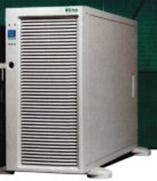
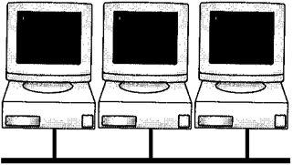

https://www.youtube.com/watch?v=ahOrOWcmNIY
4. Ход занятия
|
Этап Время |
Содержание (кратко) |
Методы и средства обучения |
|
Вводный 5 мин. |
Приветствие. Сообщение темы лекции, цели, плана занятия. |
|
|
20 мин. |
Название и краткое содержание История развития средств вычислительной техники Классификация ЭВМ Принципы организации ЭВМ |
Наглядный метод: метод иллюстраций — использование слайдов.
|
|
10 мин |
Название и краткое содержание видеоматериал « Какой путь прошли компьютеры до наших дней? 1905-2019 [ЭВОЛЮЦИЯ КОМПЬЮТЕРОВ » |
Наглядный метод: метод демонстраций —видео |
|
5 мин. |
Название и краткое содержание Недостатки компьютерных сетей – но использование этих сетей с каждым годом растет |
Проблемный метод (предъявление проблемы и создание проблемной ситуации)
|
|
Заключительный 10 мин |
Подведение итогов. Выводы по теме. Преимущества ЭВМ. Сравнительный анализ
|
Метод проблемного изложения Провести аналогию с видами топологии
|
5.
Рефлексия по занятию (Рефлексия
- это самоанализ, самооценка, "взгляд внутрь себя".
Применительно к урокам, рефлексия - это этап урока, в ходе которого
учащиеся самостоятельно оценивают свое состояние, свои эмоции,
результаты своей деятельности)
На занятиях применяется видеоматериал «Основы компьютерных сетей - принципы работы и оборудование». После обязательно будут опрошены 3-4 студента:
Оценка
своей деятельности.
Студент должен задуматься над такими вопросами: "Что я успел
сделать на занятии? Чего достиг? Что осталось для меня
нерешенным?"
Провести такой вид рефлексии можно, оформив
"лестницу успеха". Студент сам должен оценить, на какой
ступеньке он оказался в результате деятельности во время занятия,
т.е. оценить достигнутые результаты.
6. Домашнее задание
Задание на СРС
Общее: анализ конспекта, выборочное: реферат на тему «Классификация вычислительных машин. Совместимость», «Эволюция вычислительной техники».
Задание на СРСП
- Изучите классификации вычислительных машин и сделать анализ совместимости.
2. Цели, задачи: введение нового материала. Актуализация знаний по предыдущей теме.
2.1. Перечень профессиональных умений, которыми овладевают обучающиеся в процессе учебного занятия
Получение знаний о назначениях и составе беспроводных сетей. Знание классификации беспроводных сетей и умение делать сравнительный анализ с традиционными сетями
2.2 Краткое содержание занятия
Одноранговые сети и сети на основе сервера объединяет общая цель — разделение ресурсов. А вот различия между одноранговыми серверами и выделенными серверами определяют: требования к аппаратному обеспечению; способ поддержки пользователей. В качестве примера ниже приведены характеристики сервера R-Style* Marshall* NP 241.
Он поддерживает работу до двух процессоров Intel Xeon с частотой 2,80 ГГц; имеет до 4 ГБ оперативной памяти ЕСС DDR200/266 SDRAM двухканального контроллера Ultra 160 SCSI; до 10 дисков «горячей» замены Ultral60 SCSI; два серверных сетевых адаптера Intel PRO 82250 Server 10/100; три независимые шины PCI с частотами работы 33,100,133 МГц,
Серверы R-Style® Marshall" позволяют реализовывать такие решения для электронного бизнеса как базы данных, системы электронной коммерции и планирование ресурсов предприятий.
Для повышения уровня готовности и надежности в серверах семейства R-Style Marshall NP 241 используются встроенные контроллеры Ethernet, резервные системы питания, отсеки для накопителей SCSI с горячей заменой, поддержка карт PCI с горячей заменой и резервные системы вентиляторов с горячей заменой. Эти возможности, в сочетании с модульной, обеспечивающей удобный доступ, конструкцией корпуса. Они сертифицированы на совместимость с серверной операционной системой Microsoft" Windows" 2000 Advanced Server.
Характеристики основных типов сетей приведены ниже.
|
Параметры |
Одноранговые сети |
Сети на основе сервера |
|
Размер |
Не более 10 компьютеров |
Ограничены аппаратным обеспечением сервера и сети |
|
Защита |
Вопросы защиты решаются каждым пользователем самостоятельно |
Широкая и комплексная защита ресурсов и пользователей |
|
Администрирование |
Вопросами администрирования своего компьютера занимается каждый пользователь. Нет необходимости в отдельном администраторе |
Администрирование осуществляется централизованно. Необходим хотя бы один администратор с соответствующим уровнем знаний |
Компоновка сети
Топология сети
Термин “топология”, или “топология сети”, характеризует физическое расположение компьютеров, кабелей и других компонентов сети. Топология – это стандартный термин, который используется при описании основной компоновки сети. Кроме термина “топология” для описания физической компоновки употребляют также следующие:
физическое расположение;
компоновка;
диаграмма;
карта.
Топология сети обуславливает ее характеристики. В частности, выбор той или иной топологии влияет:
на состав необходимого сетевого оборудования;
характеристики сетевого оборудования;
возможности расширения сети;
способ управления сетью.
Если Вы поймете, как используются различные топологии, Вы сумеете понять, какими возможностями обладают различные типы сетей.
Чтобы совместно использовать ресурсы или выполнять другие сетевые задачи, компьютеры должны быть подключены друг к другу. Для этой цели в большинстве сетей применяется кабель.
Однако просто подключить компьютер к кабелю, соединяющему другие компьютеры, не достаточно. Различные типы кабелей в сочетании с различными сетевыми платами, сетевыми операционными системами и другими компонентами требуют и различного взаимного расположения компьютеров.
Каждая топология сети налагает ряд условий. Например, она может диктовать не только тип кабеля, но и способ его прокладки.
Топология может также определять способ взаимодействия компьютеров в сети. Различным видам топологий соответствуют различные методы взаимодействия, и эти методы оказывают большое влияние на сеть.
Базовые топологии
Все сети строятся на основе трех базовых топологий: шина (bus); звезда (star); кольцо (ring).
Если компьютеры подключены вдоль одного кабеля [сегмента (segment)], топология называется шиной. В том случае, когда компьютеры подключены к сегментам кабеля, исходящим из одной точки, или концентратора, топология называется звездой. Если кабель, к которому подключены компьютеры, замкнут в кольцо, такая топология носит название кольца.
Хотя сами по себе базовые топологии несложны, в реальности часто встречаются довольно сложные комбинации, объединяющие свойства нескольких топологий.
Шина
Топологию “шина” часто называют “линейной шиной” (linear bus). Данная топология относится к наиболее простым и широко распространенным топологиям. В ней используется один кабель, именуемый магистралью или сегментом, вдоль которого подключены все компьютеры сети.
Взаимодействие компьютеров
В сети с топологией “шина” компьютеры адресуют данные конкретному компьютеру, передавая их по кабелю в виде электрических сигналов. Чтобы понять процесс взаимодействия компьютеров по шине, нужно уяснить следующие понятия: передача сигнала; отражение сигнала; терминатор.
Передача сигнала
Данные в виде электрических сигналов передаются всем компьютерам сети; однако информацию принимает только тот, адрес которого соответствует адресу получателя, зашифрованному в этих сигналах. Причем в каждый момент времени только один компьютер может вести передачу.
|
 |
|
Рис. 8. Простая сеть с топологией “шина” |
Так как данные в сеть передаются лишь одним компьютером, ее производительность зависит от количества компьютеров, подключенных к шине. Чем их больше, т.е. чем больше компьютеров, ожидающих передачи данных, тем медленнее сеть.
2.3. Контрольные вопросы:
1. Что понимают под терминами «вычислительная техника», «компьютер», «электронно-вычислительная техника»?
2. Какие типы устройств использовались для выполнения вычислительных операций?
3. Что понимается под термином «поколение ЭВМ»?
4. Какие поколения выделяют в истории развития ЭВМ?
5. Как эволюционировала элементная база компьютеров от поколения к поколению?
6. По каким признакам можно классифицировать ЭВМ?
7. В чем разница между сервером и рабочей станцией?
8. Что понимается под «архитектурой ЭВМ»?
9. Какие принципы организации ЭВМ называют «принципами фон Неймана»?
10. В чем заключается принцип открытой архитектуры?
11. В чем заключается магистрально-модульный принцип построения компьютера?
12. Какие устройства размещаются на материнской плате?
13. Какие виды компьютерной памяти вы знаете?
14. Какие устройства относятся к устройствам ввода/вывода? 15. Опишите структурную блок-схему персонального компьютера.
16. Что называют конфигурацией вычислительной техники?
2.4. Глоссарий
Глоссарий
|
На русском языке |
На казахском языке |
На английском языке |
|
Адаптер |
Адаптер |
Adapter |
|
аппаратное устройство или программный компонент, преобразующий передаваемые данные из одного представления в другое |
||
|
Драйвер |
Драйвер |
Driver |
|
компьютерное программное обеспечение (программа-посредник), с помощью которого другое программное обеспечение (операционная система) получает доступ к аппаратному обеспечению некоторого устройства. |
||
|
Интерфейс |
Интерфейс |
Interface |
|
стандартизированная система сигналов и вид связи между отдельными устройствами |
||
|
Кулер |
Кулер |
Cooler |
|
система охлаждения процессора, представляющая собой систему из теплоотводящего радиатора и вентилятора. |
||
3. Оснащение занятия
3.1 Учебно-методическое оснащение, справочная литература
Основная:
1. Симонович С.В. Информатика. Базовый курс: Учебник для вузов. Стандарт третьего поколения. – СПб.: Питер, 2015. – 640 с.
2. Ушаков И.А. История науки сквозь призму озарений. Кн. 6. От счетных машин до ЭВМ: Как люди научили машины «думать». – М.: КомКнига, 2010. – 176 с.
3. Питухин Е.А. Основы информатики: учебное пособие / авт.-сост.: Е.А. Питухин, О.А. Зятева. – Петрозаводск: Изд-во ПетрГУ, 2012. – 76 с. http://elibrary.karelia.ru/book.shtml?levelID=031&id=17240&cType=1
4. Хлебников А.А. Информационные технологии: учебник. – М.: КНОРУС, 2014. – 472 с.
5. http://pmik.karelia.ru/user/semenova/Informatika/DOC/Sam_Izuch/History_EVM.pdf
6. https://Top500.org Рейтинг самых мощных компьютеров мира
Дополнительная:
7. https://ru.wikipedia.org/wiki/
8. https://ru.wikipedia.org/wiki/История_вычислительной_техники
9. https://ru.wikipedia.org/wiki/ Статья «Архитектура фон Неймана».
10. http://book.kbsu.ru/theory/chapter3/1_3.html (Классификация компьютеров)
11. http://edu.dvgups.ru/metdoc/its/izisk/informat/metod/3/frame/2.htm#_Toc217156137
12. http://wiki.mvtom.ru/index.php/Классификация_ЭВМ
13. http://wiki.mvtom.ru/index.php/Этапы_развития_вычислительной_техники
14. http://www.probios.ru/options/cpu/ 15. http://cssblok.ru/computer/osnblkomp.html (Основные блоки компьютера)
3.2 Техническое оснащение, материалы (слайды, видеоматериалы )